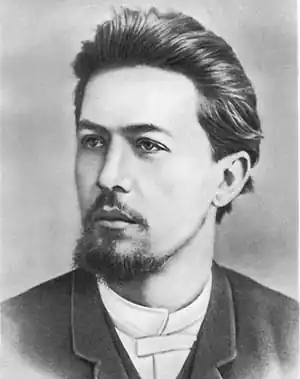

Чехов Антон
(1860-1905)
Російський письменник, у творчому доробку якого є оповідання, повісті, водевілі, драми. Чехов вважається неперевершеним майстром "малого жанру". У період захоплення читачів великими романами він пише стислі, яскраві, колоритні твори на побутові теми. Джерелом сюжетів були анекдотичні випадки, дивні ситуації та сіра буденність. У той же час Чехов створює абсолютно новий тип прози і драми — тут і філософія, і аналітика, тут деталь, сповнена насиченою думкою і почуттям. Чехов — майстер підтексту. У юності він написав перші гумористичні твори "Лист до вченого сусіда", водевіль "Про що співала курка" (1880). Роздуми над російською дійсністю бачимо в "Палаті № 6" (1892), "Людині у футлярі" (1898). Чехов-драматург створив всесвітньовідомі п'єси: "Чайка" (1896), "Три сестри" (1901), "Вишневий сад" (1904). За глибиною осмислення життєвих явищ Чехов постає в одному ряду з такими відомими прозаїками, як Ф. М. Достоєвський, Л. М. Толстой.